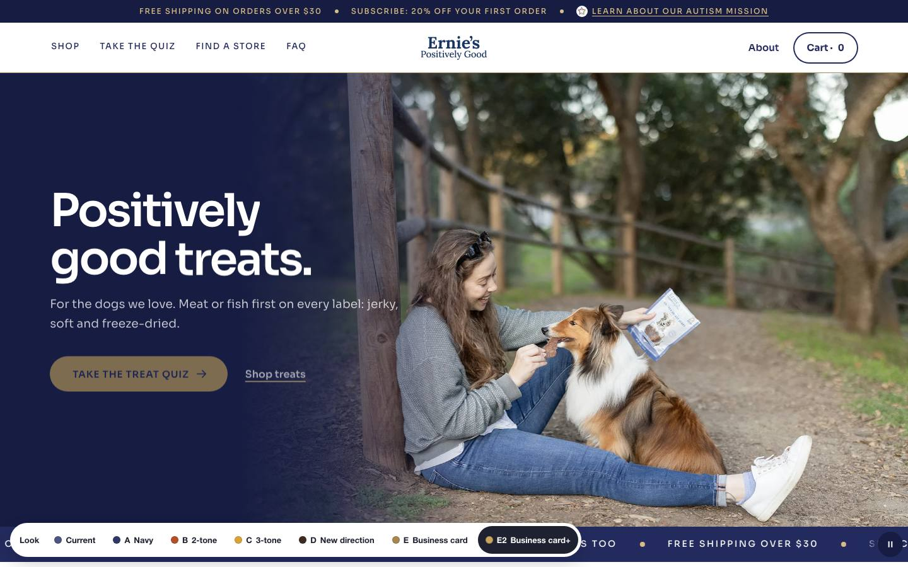
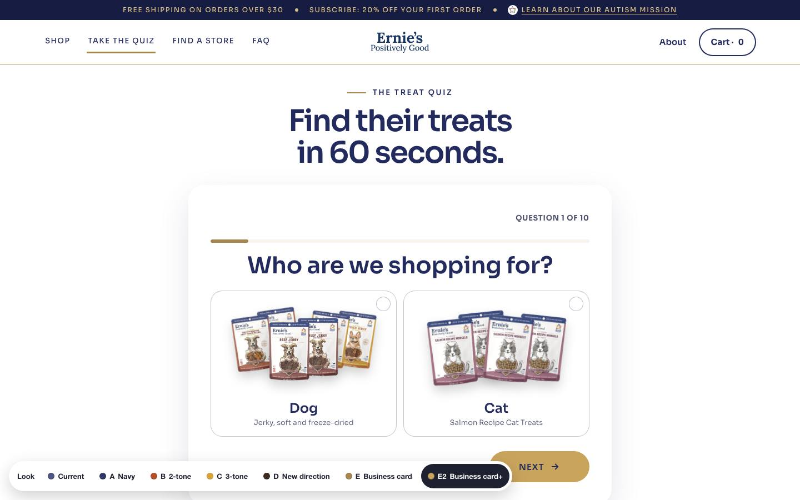
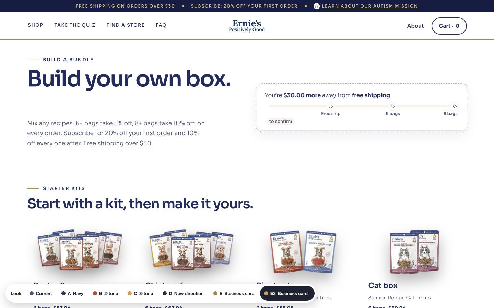
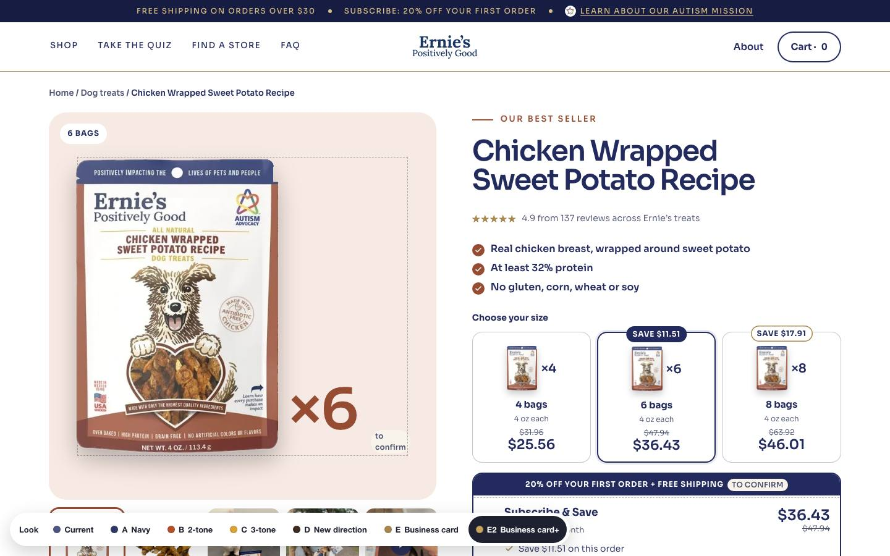
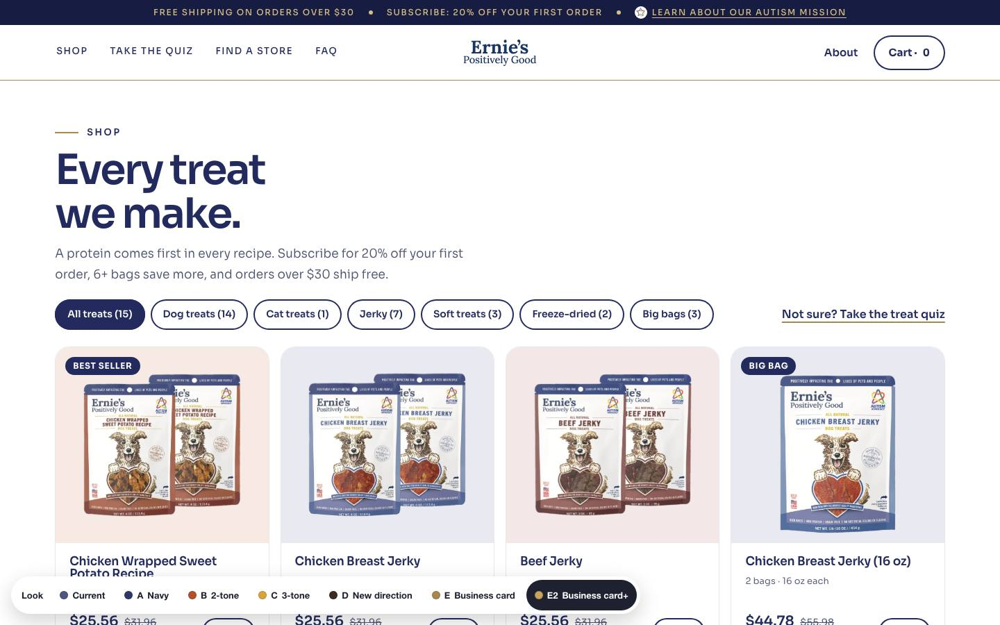
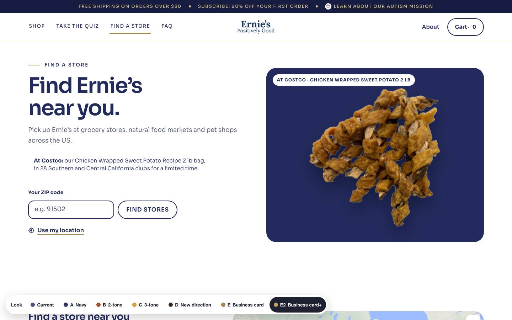
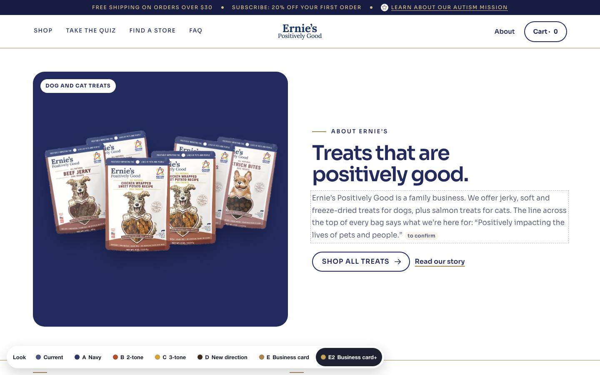

Seven colour options
Same site, same logo, seven ways to colour it. Tap one to open the homepage in it. The Look button at the bottom of every page switches any time.
- E2 · Business card+ (new)
Your business card’s navy and gold, with the cleaner finish you liked on our call: a clean modern font, airy spacing, white and soft cream sections and a big photo at the top. Gold is saved for the main buttons so they’re the first thing you see, and every product shows a touch of its own bag colour. New: the homepage now opens with a gentle animation, the buttons have an arrow and a smooth colour slide when you hover them, product cards turn to show the back of the bag, and the Add button on every card now starts on Subscribe & save. The site opens in this one.
See it - E · Business card
Your business card as a website: navy for every word, a clean white background, gold only as a thin trim, and your card’s tagline in the footer.
See it - Current
The first mockup’s colours: soft navy, terracotta and warm grey. Here so you can compare.
See it - A · Navy
Ernie’s navy from your logo and the band on every bag, with plenty of white space. The closest to your packaging today.
See it - B · 2-tone
Navy plus one warm rust accent on buttons and highlights, like the Costco display and the static ad you liked. Bold and easy to spot.
See it - C · 3-tone
Navy, red and mustard, all three taken from the bag. The most colourful, playful option.
See it - D · New direction
Cream, brown ink and red from the front of the bag: the paper, the hand-drawn dog and the red recipe name. Same logo, a warmer, handmade feel.
See it
The five-minute tour
Everything clicks. Try it in this order.
- The treat quiz
One question per screen: dog or cat, their name, size, anything to avoid and the treats they love. It packs a box that fits, with Subscribe & Save already on.
Take the quiz - Build a bundle
Pick any treats, watch the savings bar fill up and subscribe the whole bundle in one switch. The cart shows the same savings bar.
Build a bundle - The best-seller page
Size cards, a clear Subscribe & Save box, the ingredients story, customer videos, reviews and the full label.
Open the page - Real dogs, real bags
Customer videos from your store and your Drive, click to play, next to your written reviews.
See the reviews - Find a store
Every store that carries Ernie’s and your Costco clubs on one map. Search by ZIP or use your location.
Find a store
Every page
Prices and photos come from your store. The Subscribe & Save offer is our proposal; it’s the first question at the end.







Before we build it in Shopify
- We recommend 20% off a first subscription order, then 10% off every delivery, plus 5% off for 6+ bags and 10% off for 8+ bags on every order. Is the deepest first order (about 28% off 8 bags subscribed) OK for your margin, or should the first order be 15%?
- Three of the dog videos (Chicken Wrapped Sweet Potato and two Ostrich Bites clips) are the creator videos from Trybe, which we understand are licensed for ads only. May we use them on the website too? If not, we'll swap in your own footage from the Postable and Meta Glasses folders.
- We added a short Els for Autism section to the About page from the Foundation’s public media kit (their logo, mission and programs) and kept one footer line. Is that OK under your licence, and is “10% of our profits” the right giving line?
- Please send the star-and-heart autism logo file (SVG, or a PNG at least 500 px wide) so the mission buttons use the real mark.
- Is Ernie's on shelf at Petco now? If yes, we will add it next to Costco.
- The subscription box says customers can skip, pause or cancel anytime. Is that right for your subscription app?
- Store finder built from your Stockist store list (1,091 stores) plus the 28 Costco clubs. The list has 1,091 stores; the site copy still says 2,500 (your figure): confirm which to show.
- Can you send the feeding guide from the back of the Chicken Wrapped Sweet Potato Recipe bag? We have it for Chicken Breast Jerky and Beef Jerky, and would like to show it on every jerky page.
- What is the net weight of one bag of the Chicken Jerky in fun shapes? There is no listing graphic for it in the Drive folder.
- Does the fun-shapes chicken jerky bag carry the same front-of-bag claims as Chicken Breast Jerky (high protein, grain free, no artificial colors or flavors, made in Mexico using USA chicken)? A photo of the bag front would settle it.
- What are the calories for the Chicken Wrapped Sweet Potato Recipe (kcal/kg and per treat)? We have them for Chicken Breast Jerky and Beef Jerky from your listing graphics.
- Your product pages say "no artificial ingredients or preservatives", but several labels list glycerin, salt or tocopherols (a preservative). For now the new site uses the bag wording "No artificial colors or flavors". Which treats can carry the stronger line?
- What is the net weight of one bag of Freeze-Dried Chicken Liver?
- What kind of salmon goes into the Salmon Recipe treats (e.g. Atlantic), and where are they made?
- Where is the chicken liver sourced, and where are the Freeze-Dried Chicken Liver treats made?
- The live ostrich pages say 'hypoallergenic and easy to digest' and 'great for dogs with food sensitivities'. Is there support for these on the bag or from your supplier? Until then we leave them off the new pages.
- What animal is the collagen casing in Ostrich Bites made from? It decides whether we can show them to dogs avoiding chicken or beef.
- The Duck and Grass-Fed Beef soft treat pages say 'low in fat', but the guaranteed analysis shows crude fat of at least 28% (Duck) and 14% (Beef). Can you confirm the analysis? We've left 'low in fat' off for now.
- What is the "natural flavor" in the Duck and Salmon soft treats made from? Until we know, our quiz leaves them out for dogs avoiding beef (and both chicken and beef).
- On the About page we describe Ernie’s as a family business (retail run by one generation, the website by the next). Is that OK to publish, and can you give us two or three lines on how Ernie’s started?
- Would you like the About page to name who runs Ernie's (for example you on the online side and your dad on retail), with a photo? Right now it says 'a family business' without names.
- What does the USA badge on the Freeze-Dried Beef Liver bag say, and where is it made? The Sampler page can then say where all three treats come from.
- Do any of the four dog videos have talking in them? If so, we will add captions before launch.
- What should Costco shoppers get for signing up? Harry is building the signup form in Klaviyo with the SMS consent wording your terms need; we'll put the real offer here.
- What should retailers see about wholesale price, case pack and minimum order, or keep it 'on request'?
- Is this the right wording for your MAP policy?
- Are in-store suggested retail prices the same as the website's per-bag prices?
- Send the current sell sheet PDF so the button can download it.
- Who should stockist inquiries go to (an email or a CRM)?
- What does an ambassador get: commission %, starter box size, the follower discount on their code, and how and when payouts happen?
- Do you want training videos and an intern track at launch, and who makes the videos?
- Where should applications go: an affiliate app (e.g. UpPromote, Social Snowball, GoAffPro) or a Klaviyo list?
- These four posts are examples. Which topics do you want first, and who writes or approves the posts?
- Which social accounts should the footer link to (Instagram, Facebook, TikTok, others)?
- We show these store logos on the homepage: Costco, Amazon, Harris Teeter, Smart & Final and Rouses Markets. Which retailers do you want featured (for example Chewy, if you sell there), and are you OK showing their logos?
- Free shipping threshold: $25 or $40? The site shows $30 until you pick, and every price line updates with it.
- Please send the single-bag photos for each recipe (one bag, front on, plain background). We'll swap them in for the cut-outs we're using now.
- Anything you’d word differently. Every line is easy to change.